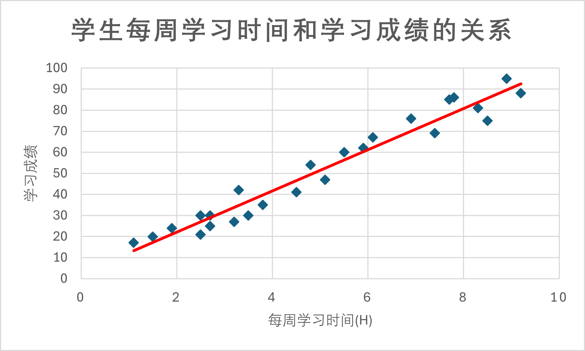

一、回归分析的概念
万事万物皆有联系。此消彼长是常态，同进同退不奇怪。如果我们想知道两个变量X , Y X,Y X , Y
很直接的想法就是测量多组X X X Y Y Y X X X Y Y Y X X X Y Y Y X X X Y Y Y
再代数一点，假设在一次实验中，我们获得了两个变量X , Y X,Y X , Y n n n ( x i , y i ) (x_i,y_i) ( x i , y i ) i = 1 , ⋯ , n i=1,\cdots,n i = 1 , ⋯ , n n n n f f f
Y = f ( θ ; X ) Y=f(\theta;X)
Y = f ( θ ; X )
其中θ \theta θ
像这样的通过变量对应的大量观测值来推断关系f f f 回归 (Regression)。
”回归“一词最早是由弗朗西斯·高尔顿提出的，用于描述他在优生学方面的发现。不过，现代的”回归“一词早已不等同于高尔顿所提出的”回归“的含义了。
照理来说，对于某一个确定的研究对象，这个关系f f f f f f
为了表示不可控制的波动，在回归分析中，我们认为两个变量的基本关系应当形如：
Y = f ( X 1 , ⋯ , X p ) + e Y=f(X_1,\cdots,X_p)+e
Y = f ( X 1 , ⋯ , X p ) + e
其中Y Y Y X p X_p X p p p p f ( X 1 , ⋯ , X p ) f(X_1,\cdots,X_p) f ( X 1 , ⋯ , X p ) e e e
既然f f f
min ∑ i = 1 n e i 2 = min ∑ i = 1 n [ y i − y i ^ ] 2 \min \sum_{i=1}^ne_i^2=\min \sum_{i=1}^n[y_i-\hat{y_i}]^2
min i = 1 ∑ n e i 2 = min i = 1 ∑ n [ y i − y i ^ ] 2
其中y i y_i y i i i i y ^ i \hat y_i y ^ i i i i
也就是说，我们需要尽可能使得拟合值与观测值接近，偏差最小。并且我们还希望控制E ( e ) = 0 E(e)=0 E ( e ) = 0 随机误差 。
另外，在保证拟合度的情况下，我们选择的曲线应当光滑；如果有经验曲线，应当考虑在内。
总的来说，寻找关系f f f
f ( Y ∣ X 1 , ⋯ , X p ) = E ( Y ∣ X 1 , ⋯ , X p ) f(Y|X_1,\cdots,X_p)=E(Y|X_1,\cdots,X_p)
f ( Y ∣ X 1 , ⋯ , X p ) = E ( Y ∣ X 1 , ⋯ , X p )
接下来的问题就是，如何寻找关系f f f
简单来说，寻找关系f f f
假定关系的带参形式f ( X , θ ) f(X,\theta) f ( X , θ ) θ \theta θ
无法假定关系的形式，采用学习方法实现端到端的映射（机器学习、深度学习、大模型）
回归分析专题主要探讨第一类方法，也就是假定关系的形式，再拟合参数 ；而第二类方法会放在其他专题当中单独学习。
既然我们要假定关系的形式，就可以把回归分为几类模型：
线性模型
广义线性模型
逻辑回归模型
泊松回归、负二项回归模型
β-回归、γ-回归模型
拓展模型
稳健回归模型
正则化回归模型
线性混合效应模型
广义线性混合效应模型
广义加性模型
生物信息学应用模型
Cox回归模型与生存分析
全基因组关联分析（GWAS）
这一讲我们先从最简单的模型讲起：线性回归。
二、线性回归的原理
2.1 线性回归的概念
线性回归模型是回归分析中最简单、最基本的回归方法，但是其重要性不可小觑，目前很多回归方法都是基于线性回归来改造的。
笔者观点：统计学的研究应当服从奥卡姆剃刀原则，如果能用更简单的模型实现近似好的效果，就不应该使用复杂模型。不过，在实际数据中，最简单的这一种线性回归也不太好用了，但是学习基础原理可以帮我们更好地理解更复杂的模型。
从几何上理解，线性回归就是认为观测值的分布是线性变化的。例如下图这组数据，描述了学生每周学习时间和学习成绩的关系，可以看到这两个变量之间大致是服从线性变化的，如果使用曲线来描述就不太能表达数据的特征。

从代数上理解，线性回归是指假定关系f f f 参数是线性的 ，满足E ( e ) = 0 E(e)=0 E ( e ) = 0 V a r ( e ) = σ 2 Var(e)=\sigma^2 Va r ( e ) = σ 2 线性回归模型 可以表示为：
y = α + x 1 β 1 + ⋯ + x p β p + e y=\alpha+x_1\beta_1+\cdots+x_p\beta_p+e
y = α + x 1 β 1 + ⋯ + x p β p + e
其中x 1 , ⋯ , x p x_1,\cdots,x_p x 1 , ⋯ , x p β 1 , ⋯ , β p \beta_1,\cdots,\beta_p β 1 , ⋯ , β p α \alpha α e e e y y y
在这一小节我们不考虑截距项，即认为：
y = x 1 β 1 + ⋯ + x p β p + e y=x_1\beta_1+\cdots+x_p\beta_p+e
y = x 1 β 1 + ⋯ + x p β p + e
如何理解”参数是线性的“？
参数是线性的，意味着β 1 , ⋯ , β p \beta_1,\cdots,\beta_p β 1 , ⋯ , β p x 1 β 1 2 x_1\beta_1^2 x 1 β 1 2
但是，形如y = x 1 β 1 + x 2 2 β 2 + β 3 log x 3 y=x_1\beta_1+x_2^2\beta_2+\beta_3\log x_3 y = x 1 β 1 + x 2 2 β 2 + β 3 log x 3
如果使用多组观测值来拟合这个模型，就要进行一点变化。假设我们一共观测了n n n n n n
y i = x i 1 β 1 + ⋯ + x i p β p + e i , i = 1 , ⋯ , n y_i=x_{i1}\beta_1+\cdots+x_{ip}\beta_{p}+e_i,i=1,\cdots,n
y i = x i 1 β 1 + ⋯ + x i p β p + e i , i = 1 , ⋯ , n
如果写成矩阵形式就是：
( y 1 ⋮ y n ) = ( x 11 ⋯ x 1 p ⋮ ⋱ ⋮ x n 1 ⋯ x n p ) ( β 1 ⋮ β p ) + ( e 1 ⋮ e n ) \begin{pmatrix}
y_1\\ \vdots\\ y_n
\end{pmatrix}=
\begin{pmatrix}
x_{11}&\cdots&x_{1p}\\
\vdots&\ddots&\vdots\\
x_{n1}&\cdots&x_{np}
\end{pmatrix}
\begin{pmatrix}
\beta_1\\ \vdots\\ \beta_p
\end{pmatrix}+
\begin{pmatrix}
e_1\\ \vdots\\ e_n
\end{pmatrix}
y 1 ⋮ y n = x 11 ⋮ x n 1 ⋯ ⋱ ⋯ x 1 p ⋮ x n p β 1 ⋮ β p + e 1 ⋮ e n
即：
Y n × 1 = X n × p β p × 1 + e n × 1 E ( e ) = 0 Y_{n\times 1}=X_{n\times p}\beta_{p\times 1}+e_{n\times 1}\ \ \ E(e)=0
Y n × 1 = X n × p β p × 1 + e n × 1 E ( e ) = 0
我们称矩阵X n × p X_{n\times p} X n × p 设计矩阵 (design matrix)，X β X\beta Xβ 线性预测子 。一般认为r a n k ( X ) = p rank(X)=p r ank ( X ) = p r a n k ( X ) < p rank(X)<p r ank ( X ) < p
既然要拟合模型，那么我们首先要确定模型的参数量。在线性回归中，我们要拟合的参数有：
β 1 , ⋯ , β p \beta_1,\cdots,\beta_p β 1 , ⋯ , β p 回归系数 ，用于描述每个自变量的贡献，估计值为β ^ 1 , ⋯ , β ^ p \hat\beta_1,\cdots,\hat\beta_p β ^ 1 , ⋯ , β ^ p p p p C o v ( e i , e j ) Cov(e_i,e_j) C o v ( e i , e j ) 误差的协方差阵 ，用于描述误差的波动情况，估计值为C o v ( e ^ i , e ^ j ) Cov(\hat e_i,\hat e_j) C o v ( e ^ i , e ^ j ) ( n 2 + n ) / 2 (n^2+n)/2 ( n 2 + n ) /2
因此，线性回归模型的参数总量是p + ( n 2 + n ) / 2 p+(n^2+n)/2 p + ( n 2 + n ) /2 n n n
当然有，我们会假定n n n 独立等方差 的，此时协方差阵可以简化为C o v ( e i , e j ) = σ 2 I n Cov(e_i,e_j)=\sigma^2I_n C o v ( e i , e j ) = σ 2 I n I n I_n I n p + 1 p+1 p + 1 高斯-马尔可夫假定 (Gaussian-Markov, GM)，这也是为什么很多相关书籍会假定线性模型的每一次观测是独立等方差的。
2.2 线性回归的参数估计
对线性回归来说，最重要的参数就是回归系数 ，这是我们参数估计的重点。对回归系数的估计采用广为人知的最小二乘法 (Ordinary Least Square, OLS)。最小二乘法的核心思想就是使得观测值与估计值的误差尽可能地小，从而完成对回归系数地估计。这与我们之前提到的”最优回归“不谋而合。
我们先从独立等方差的情形开始求解。对于线性模型Y n × 1 = X n × p β p × 1 + e n × 1 Y_{n\times 1}=X_{n\times p}\beta_{p\times 1}+e_{n\times 1} Y n × 1 = X n × p β p × 1 + e n × 1 E e = 0 Ee=0 E e = 0 C o v ( e ) = σ 2 I n Cov(e)=\sigma^2 I_n C o v ( e ) = σ 2 I n
Q ( β ) = ∣ ∣ e ∣ ∣ 2 = ∣ ∣ Y − X β ∣ ∣ = ( Y − X β ) T ( Y − X β ) Q(\beta)= ||e||^2= ||Y-X\beta|| = (Y-X\beta)^T(Y-X\beta)
Q ( β ) = ∣∣ e ∣ ∣ 2 = ∣∣ Y − Xβ ∣∣ = ( Y − Xβ ) T ( Y − Xβ )
优化目标为：
min β Q ( β ) = min β ∑ i = 1 n e i 2 = min β ∑ i = 1 n ( y i − x i T β ) 2 \min_\beta Q(\beta)=\min_\beta\sum_{i=1}^ne_i^2=\min_\beta\sum_{i=1}^n(y_i-x_i^T\beta)^2
β min Q ( β ) = β min i = 1 ∑ n e i 2 = β min i = 1 ∑ n ( y i − x i T β ) 2
其中x i = ( x i 1 , ⋯ , x i p ) T x_i=(x_{i1},\cdots,x_{ip})^T x i = ( x i 1 , ⋯ , x i p ) T
要求解这个优化问题，只需要求解∂ Q ( β ) ∂ β = 0 \frac{\partial Q(\beta)}{\partial \beta}=0 ∂ β ∂ Q ( β ) = 0
X T X β = X T Y X^TX\beta=X^TY
X T Xβ = X T Y
这个方程被称为正规方程 (Normal Equation)，分量形式可以写作：
( ∑ i = 1 n x i x i T ) β = ∑ i = 1 n x i y i (\sum_{i=1}^nx_ix_i^T)\beta=\sum_{i=1}^nx_iy_i
( i = 1 ∑ n x i x i T ) β = i = 1 ∑ n x i y i
求解过程
直接采用矩阵形式求解，首先可以证明
∂ C T β ∂ β = C ∂ β T A β ∂ β = ( A + A T ) β \begin{aligned}\frac{\partial C^T\beta}{\partial\beta}&=C\\ \frac{\partial\beta^TA\beta}{\partial\beta}&=(A+A^T)\beta\end{aligned}
∂ β ∂ C T β ∂ β ∂ β T A β = C = ( A + A T ) β
于是可以求解：
∂ Q ( β ) ∂ β = ∂ ∂ β ( Y T Y − 2 Y T X β + β T X T X β ) = − 2 X T Y + 2 X T X β = 0 \begin{aligned}\frac{\partial Q(\beta)}{\partial \beta}&=\frac{\partial}{\partial \beta}(Y^TY-2Y^TX\beta+\beta^TX^TX\beta)\\ &=-2X^TY+2X^TX\beta=0\end{aligned}
∂ β ∂ Q ( β ) = ∂ β ∂ ( Y T Y − 2 Y T Xβ + β T X T Xβ ) = − 2 X T Y + 2 X T Xβ = 0
最后解得：X T X β = X T Y X^TX\beta=X^TY X T Xβ = X T Y
得到正规方程后，我们还要考虑两个问题：
正规方程是否有解？
如果有解，有多少个解？
首先，正规方程一定有解，因为：
X T Y ∈ μ ( X T X ) = { X T X β ∣ β ∈ R P } X^TY\in \mu(X^TX)=\left\{X^TX\beta|\beta\in\mathbb R^P\right\}
X T Y ∈ μ ( X T X ) = { X T Xβ ∣ β ∈ R P }
所以至少存在一个解为：
β ^ = ( X T X ) − X T Y \hat\beta=(X^TX)^-X^TY
β ^ = ( X T X ) − X T Y
其次，有多少个解取决于设计矩阵的秩：
如果r a n k ( X ) = p rank(X)=p r ank ( X ) = p β ^ \hat\beta β ^ β ^ = ( X T X ) − X T Y \hat\beta=(X^TX)^-X^TY β ^ = ( X T X ) − X T Y
如果r a n k ( X ) < p rank(X)<p r ank ( X ) < p β ^ \hat\beta β ^ β ^ \hat\beta β ^
回归系数解决完以后，那么方差参数σ 2 \sigma^2 σ 2 e ^ = Y − X β ^ = ( I n − P X ) Y \hat e=Y-X\hat\beta=(I_n-P_X)Y e ^ = Y − X β ^ = ( I n − P X ) Y E e ^ = 0 E\hat e=0 E e ^ = 0 C o v ( e ^ ) = σ 2 ( I n − P X ) Cov(\hat e)=\sigma^2(I_n-P_X) C o v ( e ^ ) = σ 2 ( I n − P X ) r a n k ( X ) = r rank(X)=r r ank ( X ) = r
σ ^ 2 = e ^ T e ^ n − r = Y T ( I n − P X ) Y n − r \hat\sigma^2=\frac{\hat e^T\hat e}{n-r}=\frac{Y^T(I_n-P_X)Y}{n-r}
σ ^ 2 = n − r e ^ T e ^ = n − r Y T ( I n − P X ) Y
另外，如果误差还服从正态分布，即e ∼ N r ( 0 , σ 2 I n ) e\sim N_r(0,\sigma^2I_n) e ∼ N r ( 0 , σ 2 I n ) 高斯噪声 (Gaussian Noise)，还有新的结论：
β ^ \hat \beta β ^ β \beta β β ^ ∼ N ( β , σ 2 ( X T X ) − ) \hat\beta\sim N(\beta,\sigma^2(X^TX)^-) β ^ ∼ N ( β , σ 2 ( X T X ) − ) ( n − r ) σ ^ 2 / n (n-r)\hat\sigma^2/n ( n − r ) σ ^ 2 / n σ 2 \sigma^2 σ 2 ( n − r ) σ ^ 2 / σ 2 ∼ χ n − r 2 (n-r)\hat\sigma^2/\sigma^2\sim \chi_{n-r}^2 ( n − r ) σ ^ 2 / σ 2 ∼ χ n − r 2 β ^ \hat\beta β ^ σ ^ 2 \hat\sigma^2 σ ^ 2
三、有约束的线性回归
前面我们讨论了一般线性回归的参数估计，接下来我们加一点难度，探讨有约束的线性回归模型 。
有约束，是指对回归系数β \beta β L β = d L\beta=d L β = d d d d
Y n × 1 = X n × p β p × 1 + e n × 1 L q × p β = d Y_{n\times 1}=X_{n\times p}\beta_{p\times 1}+e_{n\times 1}\ \ \ L_{q\times p}\beta=d
Y n × 1 = X n × p β p × 1 + e n × 1 L q × p β = d
其中q q q
有约束线性回归在应用当中有很大用处，一方面可以限制回归系数的总和，另一方面可以在对应系数前设置0来控制参数个数，例如取L = ( 0 , 1 , 0 , ⋯ , 0 ) L=(0,1,0,\cdots,0) L = ( 0 , 1 , 0 , ⋯ , 0 ) β 2 \beta_2 β 2
3.1 有约束线性回归的参数估计
为了不失一般性以及简洁，我们假定模型为：
Y n × 1 = X n × p β p × 1 + e n × 1 L q × p β = 0 Y_{n\times 1}=X_{n\times p}\beta_{p\times 1}+e_{n\times 1}\ \ \ L_{q\times p}\beta=0
Y n × 1 = X n × p β p × 1 + e n × 1 L q × p β = 0
且满足r a n k ( L q × p ) = q rank(L_{q\times p})=q r ank ( L q × p ) = q p > q p\gt q p > q L β = 0 L\beta=0 L β = 0
如果d ≠ 0 d≠0 d = 0 β 0 \beta_0 β 0 L β 0 = d L\beta_0=d L β 0 = d Y ~ = Y − X β \widetilde Y=Y-X\beta Y = Y − Xβ β ~ = β − β 0 \widetilde\beta=\beta-\beta_0 β = β − β 0 Y ~ = X β ~ + e \widetilde Y=X\widetilde\beta+e Y = X β + e L β ~ = 0 L\widetilde\beta=0 L β = 0 d = 0 d=0 d = 0
类似于最小二乘法，在约束条件下，回归系数β ^ L \hat\beta_L β ^ L
β ^ L = arg min L β = 0 ∣ ∣ Y − X β ∣ ∣ 2 \hat\beta_L=\arg \min_{L\beta=0}||Y-X\beta||^2
β ^ L = arg L β = 0 min ∣∣ Y − Xβ ∣ ∣ 2
直接对β \beta β λ q × 1 \lambda_{q\times1} λ q × 1
L ( β , λ ) = ∣ ∣ Y − X β ∣ ∣ 2 + 2 λ T L β L(\beta,\lambda)= ||Y-X\beta||^2+2\lambda^TL\beta
L ( β , λ ) = ∣∣ Y − Xβ ∣ ∣ 2 + 2 λ T L β
分别对β , λ \beta,\lambda β , λ
∂ L ( β , λ ) ∂ β = − 2 X T Y + 2 X T X β + 2 L T λ = 0 ∂ L ( β , λ ) ∂ λ = 2 L β = 0 \begin{aligned}
\frac{\partial L(\beta,\lambda)}{\partial\beta}&=-2X^TY+2X^TX\beta+2L^T\lambda=0\\
\frac{\partial L(\beta,\lambda)}{\partial\lambda}&=2L\beta=0
\end{aligned}
∂ β ∂ L ( β , λ ) ∂ λ ∂ L ( β , λ ) = − 2 X T Y + 2 X T Xβ + 2 L T λ = 0 = 2 L β = 0
最终得到：
( X T X L T L 0 ) ( β λ ) = ( X T Y 0 ) \begin{pmatrix}
X^TX&L^T\\
L&0
\end{pmatrix}
\begin{pmatrix}
\beta\\ \lambda
\end{pmatrix}=
\begin{pmatrix}
X^TY\\0
\end{pmatrix}
( X T X L L T 0 ) ( β λ ) = ( X T Y 0 )
可以证明，这个方程一定有解。
证明 ：
先给出两个引理，这两个引理的证明请看附录。
引理1 ：设S = { A n × m x ∣ B k × m x = 0 , x ∈ R m } S=\{A_{n\times m}x|B_{k\times m}x=0,x\in\mathbb R^m\} S = { A n × m x ∣ B k × m x = 0 , x ∈ R m } S S S S S S d i m S = r a n k ( A B ) − r a n k ( B ) dim S=rank\begin{pmatrix}A\\ B\end{pmatrix}-rank(B) d im S = r ank ( A B ) − r ank ( B ) 引理2 ：设矩阵V p × p ≥ 0 V_{p\times p}\ge0 V p × p ≥ 0 A p × q A_{p\times q} A p × q
μ ( A ) ⋂ μ ( V A ⊥ ) = { 0 } \mu(A)\bigcap\mu(VA^{\bot})=\{0\} μ ( A ) ⋂ μ ( V A ⊥ ) = { 0 } μ ( V ⋮ A ) = μ ( V A ⊥ ⋮ A ) \mu(V\vdots A)=\mu(VA^{\bot}\vdots A) μ ( V ⋮ A ) = μ ( V A ⊥ ⋮ A )
基于这两个引理，我们就可以开始证明了。根据L β = 0 L\beta=0 L β = 0
β = ( I p − L − L ) Z , ∀ Z p × 1 \beta=(I_p-L^-L)Z,\forall Z_{p\times 1}
β = ( I p − L − L ) Z , ∀ Z p × 1
带入第一个方程有：
X T X ( I p − L − L ) Z + L T λ = X T Y X^TX(I_p-L^-L)Z+L^T\lambda=X^TY
X T X ( I p − L − L ) Z + L T λ = X T Y
由于I p − L − L = ( L T ) ⊥ I_p-L^-L=(L^T)^\bot I p − L − L = ( L T ) ⊥
X T Y ∈ μ ( X T X ) ⊂ μ ( X T X ⋮ L T ) = μ [ X T X ( I p − L − L ) ⋮ L T ] X^TY\in\mu(X^TX)\subset\mu(X^TX\vdots L^T)=\mu[X^TX(I_p-L^-L)\vdots L^T]
X T Y ∈ μ ( X T X ) ⊂ μ ( X T X ⋮ L T ) = μ [ X T X ( I p − L − L ) ⋮ L T ]
故方程有解。
既然方程一定有解，那么有多少个解呢？这就要使用可估的概念了。详情请跳转下一小节3.2，这里我们先把至少的那一个解尝试写出来。
由于正规方程非常复杂，如果要显式地写出β ^ L \hat\beta_L β ^ L
( X T X L T L 0 ) − = ( G 11 G 12 G 21 G 22 ) \begin{pmatrix}
X^TX&L^T\\
L&0
\end{pmatrix}^-=
\begin{pmatrix}
G_{11}&G_{12}\\
G_{21}&G_{22}
\end{pmatrix}
( X T X L L T 0 ) − = ( G 11 G 21 G 12 G 22 )
因此β ^ L = G 11 X T Y \hat\beta_L=G_{11}X^TY β ^ L = G 11 X T Y V a r ( β ^ L ) = σ 2 G 11 Var(\hat\beta_L)=\sigma^2G_{11} Va r ( β ^ L ) = σ 2 G 11
当然，在一些条件下，β ^ L \hat\beta_L β ^ L r a n k ( L q × p ) = q rank(L_{q\times p})=q r ank ( L q × p ) = q
若μ ( L T ) ⊂ μ ( X T ) \mu(L^T)\subset\mu(X^T) μ ( L T ) ⊂ μ ( X T ) β ^ L = β ^ − ( X T X ) − L T [ L ( X T X ) − L T ] − 1 L β ^ \hat\beta_L=\hat\beta-(X^TX)^-L^T[L(X^TX)^-L^T]^{-1}L\hat\beta β ^ L = β ^ − ( X T X ) − L T [ L ( X T X ) − L T ] − 1 L β ^ β ^ = ( X T X ) − ( X T Y ) \hat\beta=(X^TX)^-(X^TY) β ^ = ( X T X ) − ( X T Y )
若r a n k ( X n × p ) = p rank(X_{n\times p})=p r ank ( X n × p ) = p β ^ L = β ^ − ( X T X ) − 1 L T [ L ( X T X ) − 1 L T ] − 1 L β ^ \hat\beta_L=\hat\beta-(X^TX)^{-1}L^T[L(X^TX)^{-1}L^T]^{-1}L\hat\beta β ^ L = β ^ − ( X T X ) − 1 L T [ L ( X T X ) − 1 L T ] − 1 L β ^ β ^ = ( X T X ) − ( X T Y ) \hat\beta=(X^TX)^-(X^TY) β ^ = ( X T X ) − ( X T Y )
最后，有约束线性回归的方差σ L 2 \sigma_L^2 σ L 2
σ ^ L 2 = ∣ ∣ Y − X β ^ L ∣ ∣ 2 n − s = Y T ( I n − P M ) Y n − s \hat\sigma_L^2=\frac{||Y-X\hat\beta_L||^2}{n-s}=\frac{Y^T(I_n-P_M)Y}{n-s}
σ ^ L 2 = n − s ∣∣ Y − X β ^ L ∣ ∣ 2 = n − s Y T ( I n − P M ) Y
其中M = X ( L T ) ⊥ M=X(L^T)^{\bot} M = X ( L T ) ⊥ s = r a n k ( S L ) − r a n k ( L ) s=rank\begin{pmatrix}S\\ L\end{pmatrix}-rank(L) s = r ank ( S L ) − r ank ( L )
同理，如果误差还服从正态分布，即e ∼ N r ( 0 , σ 2 I n ) e\sim N_r(0,\sigma^2I_n) e ∼ N r ( 0 , σ 2 I n )
β ^ L ∼ N ( β , σ 2 G 11 ) \hat\beta_L\sim N(\beta,\sigma^2G_{11}) β ^ L ∼ N ( β , σ 2 G 11 ) ( n − s ) σ ^ L 2 / σ 2 ∼ χ n − s 2 (n-s)\hat\sigma_L^2/\sigma^2\sim \chi_{n-s}^2 ( n − s ) σ ^ L 2 / σ 2 ∼ χ n − s 2 s = r a n k ( S L ) − r a n k ( L ) s=rank\begin{pmatrix}S\\ L\end{pmatrix}-rank(L) s = r ank ( S L ) − r ank ( L ) β ^ L \hat\beta_L β ^ L σ ^ L 2 \hat\sigma_L^2 σ ^ L 2
3.2 可估与条件可估
为了探讨正规方程解的个数，我们首先要介绍可估函数和可估原理。
给定c c c c T β c^T\beta c T β β \beta β Y Y Y a T Y a^TY a T Y β \beta β
E a T Y = c T β Ea^TY=c^T\beta
E a T Y = c T β
则称c T β c^T\beta c T β 可估函数 。
可估函数的意义就是把不可估的一组参数β \beta β β 1 , β 2 \beta_1,\beta_2 β 1 , β 2 n n n i i i y i y_i y i
y i = β 1 + β 2 + e i , i = 1 , ⋯ , n y_i=\beta_1+\beta_2+e_i,i=1,\cdots,n
y i = β 1 + β 2 + e i , i = 1 , ⋯ , n
假设该模型符合GM条件，令c = ( 1 , 1 ) T c=(1,1)^T c = ( 1 , 1 ) T β = ( β 1 , β 2 ) T \beta=(\beta_1,\beta_2)^T β = ( β 1 , β 2 ) T β 1 , β 2 \beta_1,\beta_2 β 1 , β 2 c T β = β 1 + β 2 c^T\beta=\beta_1+\beta_2 c T β = β 1 + β 2 y 1 y_1 y 1
对于一个可估函数，下面三条判定定理都是等价的：
c T β c^T\beta c T β X β 1 = X β 2 ⇒ c T β 1 = c T β 2 X\beta_1=X\beta_2\Rightarrow c^T\beta_1=c^T\beta_2 X β 1 = X β 2 ⇒ c T β 1 = c T β 2 c ∈ μ ( X T ) c\in \mu(X^T) c ∈ μ ( X T )
可估函数有如下性质：
所有的c T β c^T\beta c T β ⇔ r a n k ( X ) = p \Leftrightarrow rank(X)=p ⇔ r ank ( X ) = p r a n k ( X ) rank(X) r ank ( X )
如果c 1 T β , c 2 T β c_1^T\beta,c_2^T\beta c 1 T β , c 2 T β λ 1 c 1 T β + λ 2 c 2 T β \lambda_1c_1^T\beta+\lambda_2c_2^T\beta λ 1 c 1 T β + λ 2 c 2 T β c 1 , c 2 c_1,c_2 c 1 , c 2 c 1 T β , c 2 T β c_1^T\beta,c_2^T\beta c 1 T β , c 2 T β
如果c T β c^T\beta c T β c T β ^ c^T\hat\beta c T β ^ ( X T X ) − (X^TX)^- ( X T X ) −
接下来介绍可估原理。如果c T β c^T\beta c T β ∀ b ∈ μ ( X ) ⊥ \forall b\in \mu(X)^{\bot} ∀ b ∈ μ ( X ) ⊥ c T β c^T\beta c T β ( a + b ) T Y (a+b)^TY ( a + b ) T Y 方差最小的估计 则被称为最优线性无偏估计 (Best Linear Unbiased Estimator, BLUE)，或称为高斯-马尔可夫估计 (GM估计)。进一步地，高斯-马尔可夫定理告诉我们，如果c T β c^T\beta c T β c T β ^ c^T\hat\beta c T β ^
（不想阅读可跳过）
证明：为什么c T β ^ c^T\hat\beta c T β ^
任取a T Y a^TY a T Y c T β c^T\beta c T β
∀ β , c T β = E a T Y = a T X β ⇒ c T = a T X \begin{aligned}\forall\beta,c^T\beta&=Ea^TY=a^TX\beta\\ \Rightarrow c^T&=a^TX\end{aligned}
∀ β , c T β ⇒ c T = E a T Y = a T Xβ = a T X
分别求方差：
V a r ( a T Y ) = a T V a r ( Y ) a = σ 2 a T a V a r ( c T β ^ ) = V a r [ a T X ( X T X ) − X T Y ] = V a r ( a T P X Y ) = a T P X V a r ( Y ) P X a = σ 2 a T P X a \begin{aligned}Var(a^TY)&=a^TVar(Y)a=\sigma^2a^Ta\\ Var(c^T\hat\beta)&=Var[a^TX(X^TX)^-X^TY]\\ &=Var(a^TP_XY)\\ &=a^TP_XVar(Y)P_Xa\\ &=\sigma^2a^TP_Xa\end{aligned}
Va r ( a T Y ) Va r ( c T β ^ ) = a T Va r ( Y ) a = σ 2 a T a = Va r [ a T X ( X T X ) − X T Y ] = Va r ( a T P X Y ) = a T P X Va r ( Y ) P X a = σ 2 a T P X a
作差得：
V a r ( a T Y ) − V a r ( c T β ) = σ 2 a T ( I n − P X ) a ≥ 0 Var(a^TY)-Var(c^T\beta)=\sigma^2a^T(I_n-P_X)a\ge0
Va r ( a T Y ) − Va r ( c T β ) = σ 2 a T ( I n − P X ) a ≥ 0
当a T ( I n − P X ) a = 0 a^T(I_n-P_X)a=0 a T ( I n − P X ) a = 0 a = P X a a=P_Xa a = P X a
a T Y = a T P X Y = a T X ( X T X ) − X T Y = c T β ^ \begin{aligned}a^TY&=a^TP_XY\\ &=a^TX(X^TX)^-X^TY\\ &=c^T\hat\beta\end{aligned}
a T Y = a T P X Y = a T X ( X T X ) − X T Y = c T β ^
于是原命题得证。
所以，对于一般线性回归来说，如果r a n k ( X ) < p rank(X)<p r ank ( X ) < p
那么拓展到有约束线性回归中，就可以衍生出条件可估的概念。条件可估是指存在a a a L β = 0 L\beta=0 L β = 0 β \beta β
E a T Y = c T β Ea^TY=c^T\beta
E a T Y = c T β
可以看到，条件可估添加了约束条件L β = 0 L\beta=0 L β = 0 可估的函数数量增加 ，即满足：
c ∈ μ ( X T ⋮ L T ) c\in \mu(X^T\vdots L^T)
c ∈ μ ( X T ⋮ L T )
回忆：一般可估函数满足c ∈ μ ( X T ) c\in \mu(X^T) c ∈ μ ( X T )
（不想阅读可跳过）
证明：为什么加入了约束条件反而使得可估函数数量增加？
根据条件可估的定义，一定有：
∀ β ∈ { β ∣ L β = 0 } , E a T Y = c T β \forall\beta\in\{\beta|L\beta=0\},Ea^TY=c^T\beta
∀ β ∈ { β ∣ L β = 0 } , E a T Y = c T β
那么可以等价为：
⇔ a T X β = c T β ⇔ ( X T a − c ) T β = 0 ⇔ ( X T a − c ) T ( I p − L − L ) Z = 0 ⇔ ( X T a − c ) T ( I p − L − L ) = 0 ⇔ X T a − c ∈ μ ( L T ) ⇔ ∃ b , x T a − c = L T b ⇔ c = x T a − L T b ⇔ c ∈ μ ( X T ⋮ L T ) \begin{aligned}&\Leftrightarrow a^TX\beta=c^T\beta\\ &\Leftrightarrow(X^Ta-c)^T\beta=0\\ &\Leftrightarrow(X^Ta-c)^T(I_p-L^-L)Z=0\\ &\Leftrightarrow(X^Ta-c)^T(I_p-L^-L)=0\\ &\Leftrightarrow X^Ta-c\in\mu(L^T)\\ &\Leftrightarrow\exists b,x^Ta-c=L^Tb\\ &\Leftrightarrow c=x^Ta-L^Tb\\ &\Leftrightarrow c\in\mu(X^T\vdots L^T)\end{aligned}
⇔ a T Xβ = c T β ⇔ ( X T a − c ) T β = 0 ⇔ ( X T a − c ) T ( I p − L − L ) Z = 0 ⇔ ( X T a − c ) T ( I p − L − L ) = 0 ⇔ X T a − c ∈ μ ( L T ) ⇔ ∃ b , x T a − c = L T b ⇔ c = x T a − L T b ⇔ c ∈ μ ( X T ⋮ L T )
于是原命题得证。
同理一般可估函数，对于∀ c T β \forall c^T\beta ∀ c T β c T β ^ L c^T\hat\beta_L c T β ^ L c T β c^T\beta c T β
在小节的最后，我们讨论一种特殊情况。既然条件L β = 0 L\beta=0 L β = 0 L L L ∀ c \forall c ∀ c c T β c^T\beta c T β
要达到这个目的，我们要考虑两个条件：
添加约束后投影空间不变 ，即r a n k ( X L ) − r a n k ( L ) = r a n k ( X ) rank\begin{pmatrix}X\\ L\end{pmatrix}-rank(L)=rank(X) r ank ( X L ) − r ank ( L ) = r ank ( X ) 添加约束后列满秩 ，即r a n k ( X L ) = p rank\begin{pmatrix}X\\ L\end{pmatrix}=p r ank ( X L ) = p μ ( X T ) ⋂ μ ( L T ) = { 0 } \mu(X^T)\bigcap\mu(L^T)=\{0\} μ ( X T ) ⋂ μ ( L T ) = { 0 }
满足两个条件的约束L β = 0 L\beta=0 L β = 0 边界条件 (side condition)。
在边界条件下，β ^ L \hat\beta_L β ^ L
β ^ L = ( X T X + L T L ) − 1 X T Y \hat\beta_L=(X^TX+L^TL)^{-1}X^TY
β ^ L = ( X T X + L T L ) − 1 X T Y
四、带截距项的线性回归
前面我们假定的一般线性回归是不考虑截距项的。但是，为了获得更一般的结论，我们往往要考虑模型带有截距项，我们记作β 0 \beta_0 β 0
4.1 带截距项线性回归的参数估计
对于带截距项的模型，其分量形式为：
y i = β 0 x 0 + β 1 x 1 + ⋯ + β p − 1 x p − 1 + e i y_i=\beta_0x_0+\beta_1x_1+\cdots+\beta_{p-1}x_{p-1}+e_i
y i = β 0 x 0 + β 1 x 1 + ⋯ + β p − 1 x p − 1 + e i
其中x 0 = E n = ( 1 , ⋯ , 1 ) T x_0=E_n=(1,\cdots,1)^T x 0 = E n = ( 1 , ⋯ , 1 ) T
如果写成矩阵形式，令X = ( E n ⋮ X ~ n × ( p − 1 ) ) X=(E_n\vdots \widetilde{X}_{n\times(p-1)}) X = ( E n ⋮ X n × ( p − 1 ) ) X ~ n × ( p − 1 ) = ( x 1 T , ⋯ , x p − 1 T ) T \widetilde{X}_{n\times(p-1)}=(x_1^T,\cdots,x_{p-1}^T)^T X n × ( p − 1 ) = ( x 1 T , ⋯ , x p − 1 T ) T β = ( β 0 , ⋯ , β p − 1 ) T = ( β 0 , β I ) T \beta=(\beta_0,\cdots,\beta_{p-1})^T=(\beta_0,\beta_I)^T β = ( β 0 , ⋯ , β p − 1 ) T = ( β 0 , β I ) T
Y n × 1 = ( E n ⋮ X ~ n × ( p − 1 ) ) ( β 0 β I ) p × 1 + e n × 1 Y_{n\times1}=(E_n\vdots\widetilde X_{n\times(p-1)})\begin{pmatrix}\beta_0\\ \beta_I\end{pmatrix}_{p\times1}+e_{n\times 1}
Y n × 1 = ( E n ⋮ X n × ( p − 1 ) ) ( β 0 β I ) p × 1 + e n × 1
扩展开来写就是：
( y 1 ⋮ y n ) = ( 1 x 11 ⋯ x 1 , p − 1 1 x 21 ⋯ x 2 , p − 1 ⋮ ⋮ ⋱ ⋮ 1 x n 1 ⋯ x n , p − 1 ) ( β 0 β 1 ⋮ β p − 1 ) + ( e 1 ⋮ e n ) \begin{pmatrix}y_1\\ \vdots\\ y_n\end{pmatrix}=
\begin{pmatrix}1&x_{11}&\cdots&x_{1,p-1}\\ 1&x_{21}&\cdots&x_{2,p-1}\\ \vdots&\vdots&\ddots&\vdots\\ 1&x_{n1}&\cdots&x_{n,p-1}\end{pmatrix}
\begin{pmatrix}\beta_0\\ \beta_1\\ \vdots\\ \beta_{p-1}\end{pmatrix}+
\begin{pmatrix}e_1\\ \vdots\\ e_n\end{pmatrix}
y 1 ⋮ y n = 1 1 ⋮ 1 x 11 x 21 ⋮ x n 1 ⋯ ⋯ ⋱ ⋯ x 1 , p − 1 x 2 , p − 1 ⋮ x n , p − 1 β 0 β 1 ⋮ β p − 1 + e 1 ⋮ e n
这样写就完全变成了我们熟悉的Y = X β + e Y=X\beta+e Y = Xβ + e
β ^ = ( X T X ) − 1 X T Y \hat\beta=(X^TX)^{-1}X^TY β ^ = ( X T X ) − 1 X T Y σ ^ 2 = ∣ ∣ Y − X β ^ ∣ ∣ 2 / ( n − p ) \hat\sigma^2=||Y-X\hat\beta||^2/(n-p) σ ^ 2 = ∣∣ Y − X β ^ ∣ ∣ 2 / ( n − p ) E ( β ^ ) = β E(\hat\beta)=\beta E ( β ^ ) = β V a r ( β ^ ) = σ 2 ( X T X ) − 1 Var(\hat\beta)=\sigma^2(X^TX)^{-1} Va r ( β ^ ) = σ 2 ( X T X ) − 1 E σ ^ 2 = σ 2 E\hat\sigma^2=\sigma^2 E σ ^ 2 = σ 2 对于任意c T β c^T\beta c T β c T β ^ c^T\hat\beta c T β ^
4.2 带截距项的实际应用处理
4.1小节展示了一般性的结论，但是在实际应用中，我们更关心的是回归系数β I \beta_I β I β 0 \beta_0 β 0
Y = E n β 0 + X ~ β I + e Y=E_n\beta_0+\widetilde X\beta_I+e
Y = E n β 0 + X β I + e
另外，为了计算方便，实际应用中我们还会进行中心化处理和标准化处理。
首先介绍中心化 。中心化就是把样本点的实际值转化为到样本中心点的差值，这样做的好处就是很方便地计算出截距项 ，从而减少计算量。可以证明，中心化之后参数的估计值与不中心化是一致的。
设x ‾ j = ∑ i = 1 n x i j / n \overline x_j=\sum_{i=1}^nx_{ij}/n x j = ∑ i = 1 n x ij / n 1 ≤ j ≤ p − 1 1\le j\le p-1 1 ≤ j ≤ p − 1
y i = α + β 1 ( x i 1 − x ‾ 1 ) + ⋯ + β p − 1 ( x i , p − 1 − x ‾ p − 1 ) + e i y_i=\alpha+\beta_1(x_{i1}-\overline x_1)+\cdots+\beta_{p-1}(x_{i,p-1}-\overline x_{p-1})+e_i
y i = α + β 1 ( x i 1 − x 1 ) + ⋯ + β p − 1 ( x i , p − 1 − x p − 1 ) + e i
可以计算得到：α = β 0 + x ‾ T β I \alpha=\beta_0+\overline x^T\beta_I α = β 0 + x T β I
Y = α E n + X ~ c β I + e , E e = 0 , C o v ( e ) = σ 2 I n Y=\alpha E_n+\widetilde X_c\beta_I+e,Ee=0,Cov(e)=\sigma^2I_n
Y = α E n + X c β I + e , E e = 0 , C o v ( e ) = σ 2 I n
其中X ~ c = ( I n − E n E n T n ) X ~ \widetilde X_c=(I_n-\frac{E_nE_n^T}{n})\widetilde X X c = ( I n − n E n E n T ) X X ~ c T E n = 0 \widetilde X_c^TE_n=0 X c T E n = 0
于是我们可以得到正规方程：
( E n T X ~ c T ) ( E n X ~ c ) ( α β I ) = ( E n T X ~ c T ) Y ⇒ ( n 0 0 X ~ c T X ~ c ) ( α β I ) = ( n y ‾ X ~ c T Y ) \begin{aligned}
\begin{pmatrix}E_n^T\\ \widetilde X_c^T\end{pmatrix}
\begin{pmatrix}E_n&\widetilde X_c\end{pmatrix}
\begin{pmatrix}\alpha\\ \beta_I\end{pmatrix}&=
\begin{pmatrix}E_n^T\\ \widetilde X_c^T\end{pmatrix}Y\\
\Rightarrow\begin{pmatrix}n&0\\ 0&\widetilde X_c^T\widetilde X_c\end{pmatrix}
\begin{pmatrix}\alpha\\ \beta_I\end{pmatrix}&=
\begin{pmatrix}n\overline y\\ \widetilde X_c^TY\end{pmatrix}
\end{aligned}
( E n T X c T ) ( E n X c ) ( α β I ) ⇒ ( n 0 0 X c T X c ) ( α β I ) = ( E n T X c T ) Y = ( n y X c T Y )
于是解得：
α ^ = y ‾ β ^ I = ( X ~ c T X ~ c ) − 1 X ~ c T Y \begin{aligned}
\hat\alpha&=\overline y\\
\hat\beta_I&=(\widetilde X_c^T\widetilde X_c)^{-1}\widetilde X_c^TY
\end{aligned}
α ^ β ^ I = y = ( X c T X c ) − 1 X c T Y
进一步地：
C o v ( α ^ β ^ I ) = σ 2 ( 1 n 0 0 ( X ~ c T X ~ c ) − 1 ) Cov\begin{pmatrix}\hat\alpha\\ \hat\beta_I\end{pmatrix}=\sigma^2
\begin{pmatrix}\frac{1}{n}&0\\ 0&(\widetilde X_c^T\widetilde X_c)^{-1}\end{pmatrix}
C o v ( α ^ β ^ I ) = σ 2 ( n 1 0 0 ( X c T X c ) − 1 )
通过中心化我们知道，截距项就可以通过观测值的均值来估计，方便快捷。
另一种是标准化 。标准化是在中心化的基础上再除以标准差，其目的是消除量纲，这一点在分析协变量相关性上有重要应用。
令s j 2 = ∑ i = 1 n ( x i j − x ‾ j ) 2 s_j^2=\sum_{i=1}^n(x_{ij}-\overline x_j)^2 s j 2 = ∑ i = 1 n ( x ij − x j ) 2 1 ≤ j ≤ p − 1 1\le j\le p-1 1 ≤ j ≤ p − 1 z i j = x i j − x ‾ j s j z_{ij}=\frac{x_{ij}-\overline x_j}{s_j} z ij = s j x ij − x j Z = ( z i j ) n × ( p − 1 ) Z=(z_{ij})_{n\times(p-1)} Z = ( z ij ) n × ( p − 1 ) E n T Z = 0 E_n^TZ=0 E n T Z = 0
我们定义相关系数R = ( r i j ) ( p − 1 ) × ( p − 1 ) = Z T Z R=(r_{ij})_{(p-1)\times(p-1)}=Z^TZ R = ( r ij ) ( p − 1 ) × ( p − 1 ) = Z T Z
r i j = ∑ k = 1 n ( x k i − x ‾ i ) ( x k j − x ‾ j ) s i s j r_{ij}=\frac{\sum_{k=1}^n(x_{ki}-\overline x_i)(x_{kj}-\overline x_j)}{s_is_j}
r ij = s i s j ∑ k = 1 n ( x ki − x i ) ( x kj − x j )
相关系数可以分析协变量之间的关系，后续判断共线性问题中有重要应用。
五、特殊线性回归的处理
5.1 非独立观测与Aitken模型
前面的内容我们都在独立等方差 的GM条件下探讨线性回归的参数估计，如果协方差阵具有一定结构应该怎么处理呢？
这里我们探讨观测不独立的情形，此时模型结构为
Y n × 1 = X n × p β p × 1 + e n × 1 E ( e ) = 0 C o v ( e ) = σ 2 Σ Y_{n\times 1}=X_{n\times p}\beta_{p\times 1}+e_{n\times 1}\ \ E(e)=0\ \ Cov(e)=\sigma^2\Sigma
Y n × 1 = X n × p β p × 1 + e n × 1 E ( e ) = 0 C o v ( e ) = σ 2 Σ
其中Σ > 0 \Sigma>0 Σ > 0
这个模型被称为Aitken模型。Aitken模型仍然假定模型有公共的方差参数σ 2 \sigma^2 σ 2
模型看似复杂，但是仍然可以转化为我们熟悉的模型。我们可以做如下变换：
Y ~ = Σ − 1 2 Y , X ~ = Σ − 1 2 X , e ~ = Σ − 1 2 e \widetilde Y=\Sigma^{-\frac{1}{2}}Y,\widetilde X=\Sigma^{-\frac{1}{2}}X,\widetilde e=\Sigma^{-\frac{1}{2}}e
Y = Σ − 2 1 Y , X = Σ − 2 1 X , e = Σ − 2 1 e
变换之后你会发现，C o v ( e ~ ) = σ 2 I n Cov(\widetilde e)=\sigma^2I_n C o v ( e ) = σ 2 I n β \beta β
β ∗ = ( X T Σ − 1 X ) − X T Σ − 1 Y \beta^*=(X^T\Sigma^{-1}X)^-X^T\Sigma^{-1}Y
β ∗ = ( X T Σ − 1 X ) − X T Σ − 1 Y
特别地，如果Σ \Sigma Σ 权重 不同，那我们称此时的β ∗ \beta^* β ∗ 加权最小二乘解 。
5.2 奇异线性回归的处理
事实上，5.1小节中的Aitken模型还有一点缺陷，就是没有考虑∣ Σ ∣ = 0 |\Sigma|=0 ∣Σ∣ = 0 Σ \Sigma Σ Y n × 1 = X n × p β p × 1 + e n × 1 Y_{n\times 1}=X_{n\times p}\beta_{p\times 1}+e_{n\times 1} Y n × 1 = X n × p β p × 1 + e n × 1 E e = 0 Ee=0 E e = 0 C o v ( e ) = σ 2 Σ Cov(e)=\sigma^2\Sigma C o v ( e ) = σ 2 Σ Σ \Sigma Σ ∣ Σ ∣ = 0 |\Sigma|=0 ∣Σ∣ = 0 奇异线性模型 。
对于奇异线性模型，由于∣ Σ ∣ = 0 |\Sigma|=0 ∣Σ∣ = 0
Q ( β ) = ( Y − X β ) T Σ − ( Y − X β ) Q(\beta)=(Y-X\beta)^T\Sigma^-(Y-X\beta)
Q ( β ) = ( Y − Xβ ) T Σ − ( Y − Xβ )
是没有意义的。那么如何解决呢？
C.R.Rao认为，可以定义T = Σ + X U X T T=\Sigma+XUX^T T = Σ + X U X T r a n k ( T ) = r a n k ( Σ ⋮ X ) rank(T)=rank(\Sigma\vdots X) r ank ( T ) = r ank ( Σ ⋮ X )
Q ( β ) = ( Y − X β ) T T − ( Y − X β ) Q(\beta)=(Y-X\beta)^TT^-(Y-X\beta)
Q ( β ) = ( Y − Xβ ) T T − ( Y − Xβ )
进而可以求解。
再进一步，如果协方差阵含有参数，即C o v ( e ) = σ 2 Σ ( θ ) Cov(e)=\sigma^2\Sigma(\theta) C o v ( e ) = σ 2 Σ ( θ ) Σ ( θ ) > 0 \Sigma(\theta)>0 Σ ( θ ) > 0 θ \theta θ θ \theta θ θ ^ \hat\theta θ ^ Σ ^ ( θ ^ ) \hat\Sigma(\hat\theta) Σ ^ ( θ ^ )
β ^ ( θ ^ ) = [ X T [ Σ ^ ( θ ^ ) ] − 1 X ] X T [ Σ ^ ( θ ^ ) ] − 1 Y \hat\beta(\hat\theta)=\left[
X^T[\hat\Sigma(\hat\theta)]^{-1}X
\right]X^T\left[
\hat\Sigma(\hat\theta)
\right]^{-1}Y
β ^ ( θ ^ ) = [ X T [ Σ ^ ( θ ^ ) ] − 1 X ] X T [ Σ ^ ( θ ^ ) ] − 1 Y
附录
3.1节引理1 ：设S = { A n × m x ∣ B k × m x = 0 , x ∈ R m } S=\{A_{n\times m}x|B_{k\times m}x=0,x\in\mathbb R^m\} S = { A n × m x ∣ B k × m x = 0 , x ∈ R m } S S S S S S d i m S = r a n k ( A B ) − r a n k ( B ) dim S=rank\begin{pmatrix}A\\ B\end{pmatrix}-rank(B) d im S = r ank ( A B ) − r ank ( B ) S S S
∀ A x 1 , A x 2 ∈ S ⇒ A x 1 + A x 2 = A ( x 1 + x 2 ) ∈ S ∀ A x ∈ S , c ∈ R ⇒ A ( c x ) ∈ S \begin{aligned}
\forall Ax_1,Ax_2\in S&\Rightarrow Ax_1+Ax_2=A(x_1+x_2)\in S\\
\forall Ax\in S,c\in \mathbb R&\Rightarrow A(cx)\in S
\end{aligned}
∀ A x 1 , A x 2 ∈ S ∀ A x ∈ S , c ∈ R ⇒ A x 1 + A x 2 = A ( x 1 + x 2 ) ∈ S ⇒ A ( c x ) ∈ S
满足加法封闭和乘法封闭，所以属于线性子空间。
设V V V B x = 0 Bx=0 B x = 0 φ : V → S \varphi:V\rightarrow S φ : V → S
d i m S = d i m V − k e r φ = d i m { x ∣ B x = 0 , x ∈ R m } − d i m { x ∣ ( A B ) x = 0 , x ∈ R m } = ( m − r a n k ( B ) ) − ( m − r a n k ( A B ) ) = r a n k ( A B ) − r a n k ( B ) \begin{aligned}
dim S &= dim V - ker\ \varphi\\
&=dim\{x|Bx=0,x\in\mathbb R^m\}-dim\{x|\begin{pmatrix}A\\ B\end{pmatrix}x=0,x\in\mathbb R^m\}\\
&=(m-rank(B))-(m-rank\begin{pmatrix}A\\ B\end{pmatrix})\\
&=rank\begin{pmatrix}A\\ B\end{pmatrix}-rank(B)
\end{aligned}
d im S = d imV − k er φ = d im { x ∣ B x = 0 , x ∈ R m } − d im { x ∣ ( A B ) x = 0 , x ∈ R m } = ( m − r ank ( B )) − ( m − r ank ( A B ) ) = r ank ( A B ) − r ank ( B )
原命题得证。
3.1节引理2 ：设矩阵V p × p ≥ 0 V_{p\times p}\ge0 V p × p ≥ 0 A p × q A_{p\times q} A p × q
μ ( A ) ⋂ μ ( V A ⊥ ) = { 0 } \mu(A)\bigcap\mu(VA^{\bot})=\{0\} μ ( A ) ⋂ μ ( V A ⊥ ) = { 0 } μ ( V ⋮ A ) = μ ( V A ⊥ ⋮ A ) \mu(V\vdots A)=\mu(VA^{\bot}\vdots A) μ ( V ⋮ A ) = μ ( V A ⊥ ⋮ A )
证明：
（1）取∀ x ∈ μ ( A ) ⋂ μ ( V A ⊥ ) \forall x\in \mu(A)\bigcap\mu(VA^{\bot}) ∀ x ∈ μ ( A ) ⋂ μ ( V A ⊥ ) ∃ u , x = A u \exists u,x=Au ∃ u , x = A u ∃ w , x = V A ⊥ w \exists w,x=VA^{\bot}w ∃ w , x = V A ⊥ w A T A ⊥ = 0 A^TA^{\bot}=0 A T A ⊥ = 0
( A ⊥ ) T A = 0 ⇒ ( A ⊥ ) T A u = 0 ⇒ ( A ⊥ ) T x = 0 ⇒ ( A ⊥ ) T V A ⊥ w = 0 ⇒ w T ( A ⊥ ) T V A ⊥ w = 0 \begin{aligned}
&(A^{\bot})^TA=0\\
&\Rightarrow (A^{\bot})^TAu=0\\
&\Rightarrow (A^{\bot})^Tx=0\\
&\Rightarrow (A^{\bot})^TVA^{\bot}w=0\\
&\Rightarrow w^T(A^{\bot})^TVA^{\bot}w=0
\end{aligned}
( A ⊥ ) T A = 0 ⇒ ( A ⊥ ) T A u = 0 ⇒ ( A ⊥ ) T x = 0 ⇒ ( A ⊥ ) T V A ⊥ w = 0 ⇒ w T ( A ⊥ ) T V A ⊥ w = 0
由于V ≥ 0 V\ge0 V ≥ 0 ∃ B , V = B T B \exists B,V=B^TB ∃ B , V = B T B
w T ( A ⊥ ) T V A ⊥ w = 0 ⇒ w T ( A ⊥ ) T B T B A ⊥ w = 0 ⇒ B A ⊥ w = 0 ⇒ B T B A ⊥ w = 0 ⇒ V A ⊥ w = 0 ⇒ x = 0 \begin{aligned}
&w^T(A^{\bot})^TVA^{\bot}w=0\\
&\Rightarrow w^T(A^{\bot})^TB^TBA^{\bot}w=0\\
&\Rightarrow BA^{\bot}w=0\\
&\Rightarrow B^TBA^{\bot}w=0\\
&\Rightarrow VA^{\bot}w=0\\
&\Rightarrow x=0
\end{aligned}
w T ( A ⊥ ) T V A ⊥ w = 0 ⇒ w T ( A ⊥ ) T B T B A ⊥ w = 0 ⇒ B A ⊥ w = 0 ⇒ B T B A ⊥ w = 0 ⇒ V A ⊥ w = 0 ⇒ x = 0
原命题得证。
（2）不难验证，μ ( V A ⊥ ⋮ A ) ⊂ μ ( V ⋮ A ) \mu(VA^{\bot}\vdots A)\subset \mu(V\vdots A) μ ( V A ⊥ ⋮ A ) ⊂ μ ( V ⋮ A ) d i m μ ( V A ⊥ ⋮ A ) = d i m μ ( V ⋮ A ) dim\ \mu(VA^{\bot}\vdots A)=dim\ \mu(V\vdots A) d im μ ( V A ⊥ ⋮ A ) = d im μ ( V ⋮ A )
由于
d i m μ ( V A ⊥ ⋮ A ) = r a n k ( V A ⊥ ⋮ A ) = r a n k ( V A ⊥ ) + r a n k ( A ) d i m μ ( V ⋮ A ) = r a n k ( V ⋮ A ) \begin{aligned}
dim\ \mu(VA^{\bot}\vdots A)&=rank(VA^{\bot}\vdots A)\\
&=rank(VA^{\bot})+rank(A)\\
dim\ \mu(V\vdots A)&=rank(V\vdots A)
\end{aligned}
d im μ ( V A ⊥ ⋮ A ) d im μ ( V ⋮ A ) = r ank ( V A ⊥ ⋮ A ) = r ank ( V A ⊥ ) + r ank ( A ) = r ank ( V ⋮ A )
设S = { V x ∣ A T x = 0 , x ∈ R p } = μ ( V A ⊥ ) S=\{Vx|A^Tx=0,x\in\mathbb R^p\}=\mu(VA^{\bot}) S = { V x ∣ A T x = 0 , x ∈ R p } = μ ( V A ⊥ )
r a n k ( V ⋮ A ) − r a n k ( A ) = r a n k ( V A ⊥ ) − r a n k ( A ) = d i m S \begin{aligned}
rank(V\vdots A)-rank(A)&=rank\begin{pmatrix}V\\A^{\bot}\end{pmatrix}-rank(A)\\
&=dim\ S
\end{aligned}
r ank ( V ⋮ A ) − r ank ( A ) = r ank ( V A ⊥ ) − r ank ( A ) = d im S
所以：
r a n k ( V ⋮ A ) = r a n k ( V A ⊥ ) + r a n k ( A ) rank(V\vdots A)=rank(VA^{\bot})+rank(A)
r ank ( V ⋮ A ) = r ank ( V A ⊥ ) + r ank ( A )
于是d i m μ ( V A ⊥ ⋮ A ) = d i m μ ( V ⋮ A ) dim\ \mu(VA^{\bot}\vdots A)=dim\ \mu(V\vdots A) d im μ ( V A ⊥ ⋮ A ) = d im μ ( V ⋮ A )